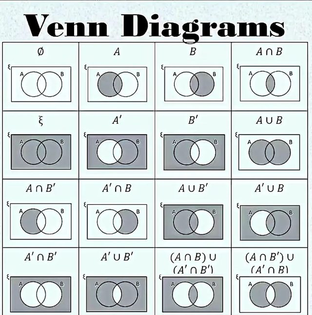

📡 Küldetés-eligazítás

📡 Dr. Bizarr: Univerzum-halmazok metszete, uniója, különbsége — ezekkel navigálok a multiverzumban, a Venn-diagram a térképem. A halmazműveletekkel megmutathatjuk, hol érintkeznek a világok — és hol tátong a Nullpont-anomália.
Két halmazt egyesíthetünk, megkereshetjük a közös elemeiket, vagy kiválaszthatjuk azokat, amelyek csak az egyikben szerepelnek. Az alaphalmazhoz képest komplementert is képezhetünk. A Venn-diagramok a műveletek eredményét szemléltetik; az azonosságokkal pedig összetettebb kifejezéseket egyszerűsítünk.
Halmazműveletek — Venn-diagramokkal
A következő ábrákon a színezett tartományba eső elemek alkotják a művelet eredményét.
Unió (∪) — „VAGY”
📗 Definíció
\(A \cup B = \{x | x \in A \lor x \in B\}\) — minden elem, ami legalább az egyik halmazban benne van.
Metszet (∩) — „ÉS”
📗 Definíció
\(A \cap B = \{x | x \in A \land x \in B\}\) — a közös elemek. Ha \(A \cap B = \varnothing\), a két halmaz diszjunkt (nincs közös elemük).
Különbség (∖) — „az elsőben igen, a másodikban nem”
📗 Definíció
\(A \setminus B = \{x | x \in A \land x \notin B\}\) — ami A-ban van, de B-ben nincs. Vigyázz: a különbség nem cserélhető fel — általában \(A \setminus B \neq B \setminus A\). Egyenlőség csak akkor áll fenn, ha \(A=B\): olyankor mindkettő az üres halmaz.
Szimmetrikus különbség (△)
📗 Definíció
\(A \,\triangle\, B = (A \setminus B) \cup (B \setminus A)\) — ami pontosan az egyikben van (a közös részt kihagyjuk).
Komplementer (kiegészítő halmaz)
📗 Definíció
Ha \(A \subseteq U\), akkor A komplementere az univerzumra nézve: \(\overline{A} = \mathcal{C}_{U}(A) = U \setminus A\) — minden U-beli elem, ami nincs A-ban.
⚠️ Kán csapdája — a komplementer nem önmagában létezik
A \(\overline{A}\) jelölés csak akkor jelent valamit, ha tudjuk, mi az univerzum. Ugyanaz az \(A = \{1, 2\}\) halmaz egészen mást ad komplementernek, ha \(U = \{1, 2, 3\}\) — akkor \(\overline{A} = \{3\}\) —, és mást, ha \(U = \mathbb{N}\) — akkor minden 2-nél nagyobb természetes szám beletartozik. Ha egy feladat komplementert kér, de nem mondja meg az univerzumot, a feladat hiányos: kérdezz rá.
✏️ Kiképzési szimuláció
Legyen \(U = \{1,2,\dots,9\}\), \(A = \{1,2,3,4,5\}\), \(B = \{2,4,6,8\}\). Ekkor:
\(A \cup B = \{1,2,3,4,5,6,8\}\) · \(A \cap B = \{2,4\}\) · \(A \setminus B = \{1,3,5\}\) · \(B \setminus A = \{6,8\}\) · \(A \,\triangle\, B = \{1,3,5,6,8\}\) · \(\overline{A} = \{6,7,8,9\}\) · \(\overline{B} = \{1,3,5,7,9\}\)

🎯 Gyors kérdés
Ha \(A = \{1,2,3,4\}\) és \(B = \{3,4,5,6\}\), mennyi \(A \setminus B\)?
Gyakorolj! Válaszd a bevetésed: (unió, metszet, különbség, komplementer, kombinált műveletek)
Műveleti tulajdonságok + De Morgan
A halmazműveletek sok mindenben úgy viselkednek, mint a számoknál a + és a ·: van kommutativitás, asszociativitás és disztributivitás. Az ismételt unió és metszet sem változtatja meg a halmazt: \(A\cup A=A\) és \(A\cap A=A\).
📘 De Morgan-azonosságok
\(\overline{A \cup B} = \overline{A} \cap \overline{B}\) és \(\overline{A \cap B} = \overline{A} \cup \overline{B}\)
Szavakban: az unió komplementere = a komplementerek metszete, és fordítva. (Ugyanaz a szabály, mint a logikában a \(\lnot (p \lor q) = \lnot p \land \lnot q\)!)
🔎 Szemléltető példa konkrét halmazokkal
\(U = \{1,2,3,4,5,6\}\), \(A = \{1,2,3\}\), \(B = \{3,4,5\}\).
\(A \cup B = \{1,2,3,4,5\}\) ⟹ \(\overline{A \cup B} = \{6\}\).
\(\overline{A} = \{4,5,6\}\), \(\overline{B} = \{1,2,6\}\) ⟹ \(\overline{A} \cap \overline{B} = \{6\}\). ✅ Ugyanaz!
✏️ Számolós alkalmazás — a „logikai szita”
Két véges halmaz uniójának elemszáma: \(|A \cup B| = |A| + |B| - |A \cap B|\). (A közös részt egyszer levonjuk, hogy ne számoljuk kétszer.)
Ez a képlet oldja meg a „hányan járnak legalább az egyikbe” típusú feladatokat — átrendezve pedig azt is megmondja, hányan járnak mindkettőbe: \(|A \cap B| = |A| + |B| - |A \cup B|\).
Példa. Egy 30 fős osztályból 18-an fociznak, 12-en úsznak, 5-en mindkettőt. Ekkor \(|A \cup B| = 18 + 12 - 5 = 25\) — tehát 25-en fociznak vagy úsznak, és \(30 - 25 = 5\) tanuló egyiket sem űzi.
Három véges halmazra ugyanez a gondolat, csak tovább kell szitálni:
\(|A \cup B \cup C| = |A| + |B| + |C| - |A \cap B| - |A \cap C| - |B \cap C| + |A \cap B \cap C|\)
A páronkénti metszeteket levonjuk (mert kétszer számoltuk őket), a hármas metszetet viszont vissza kell adni — azt ugyanis háromszor hozzáadtuk és háromszor levontuk, tehát egyszer sem szerepelne.
🎯 Gyors kérdés
De Morgan szerint \(\overline{A \cap B}\) egyenlő…
Gyakorolj! Válaszd a bevetésed: (De Morgan, azonosságok, szitálós szöveges feladatok)

📡 Dr. Bizarr: Már tudsz halmazműveletekkel dolgozni. A következő lapon rendezett párokat alkotunk, és megvizsgáljuk az elemek közötti kapcsolatokat: a Descartes-szorzat és a relációk következnek.